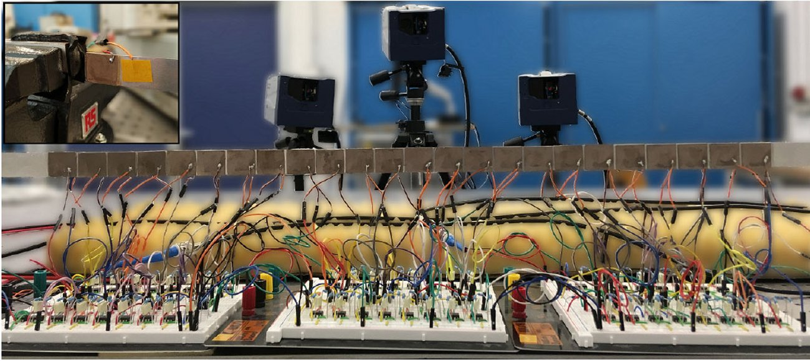
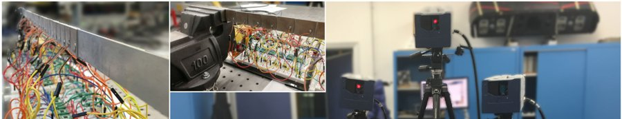

Metamaterials & Metastructures

Course project for "Metamaterials and Metastructures" (Prof. Gabriele Cazzulani, Politecnico di Milano), focused on the design and experimental testing of a periodic beam fitted with piezoelectric patches and shunt circuits to control elastic wave propagation. The beam was modeled as a time-invariant periodic structure, first in MATLAB via the Transfer Matrix Method and then in Comsol Multiphysics with an equivalent piezoelectric-shunt stiffness, to compute its dispersion relation and band-gap behavior.

The effective electromechanical coupling coefficient of the piezoelectric patches was first verified experimentally (short-circuit vs open-circuit response), then a sensitivity analysis was carried out on the dispersion relation for different shunt topologies — inductive (L), resistive-inductive (RL), and RLC shunts with negative capacitance — comparing numerical predictions against experimental data on the physical setup. The project concluded by introducing time-varying, space-time-modulated shunts and analyzing numerically (via Plane Wave Expansion and FDTD time-domain simulation in MATLAB) their effect on wave transport and on the boundary modes of the finite structure.
Tools and Technologies
- Modeling & Simulation: MATLAB (Transfer Matrix Method, Plane Wave Expansion, FDTD time simulation), Comsol Multiphysics (FEM)
- Experimental: Instrumented periodic beam with piezoelectric patches and shunt circuits, motion-tracking camera setup
- Key Concepts: Dispersion relation & band gaps, piezoelectric shunt damping, negative capacitance circuits, space-time modulated metamaterials